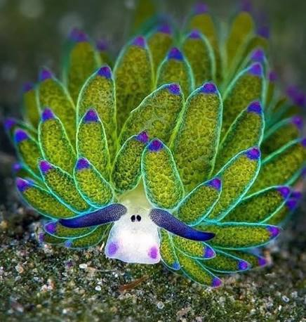
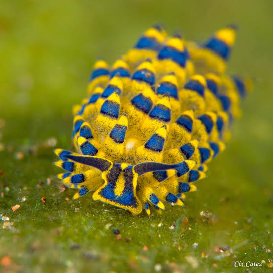
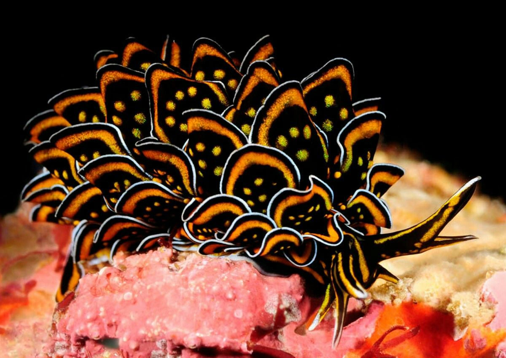
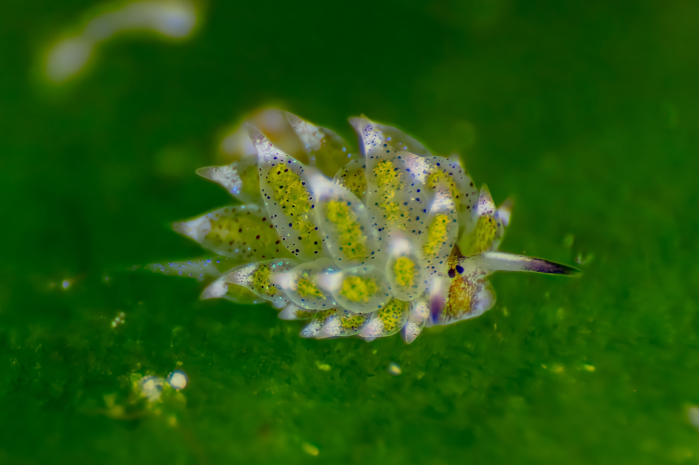
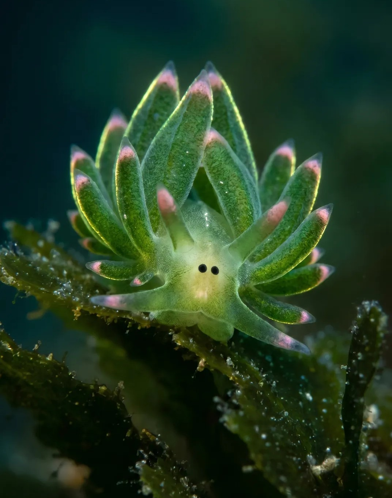

this is a leaf slug, also known as a leaf sheep! and she is adorable.

look at those eyes!!! and those cheeks!!!! ridiculous. i would do anything for her.
and fun fact! she has both male and female reproductive organs. truly a trans icon. following up on the topic of diversity, she comes in different flavors too:


and she can photosynthesize! as any leaf should.
anyway there's not much else to say about her sadly so i'll just leave you with a couple more pictures of this cutie patootie.

